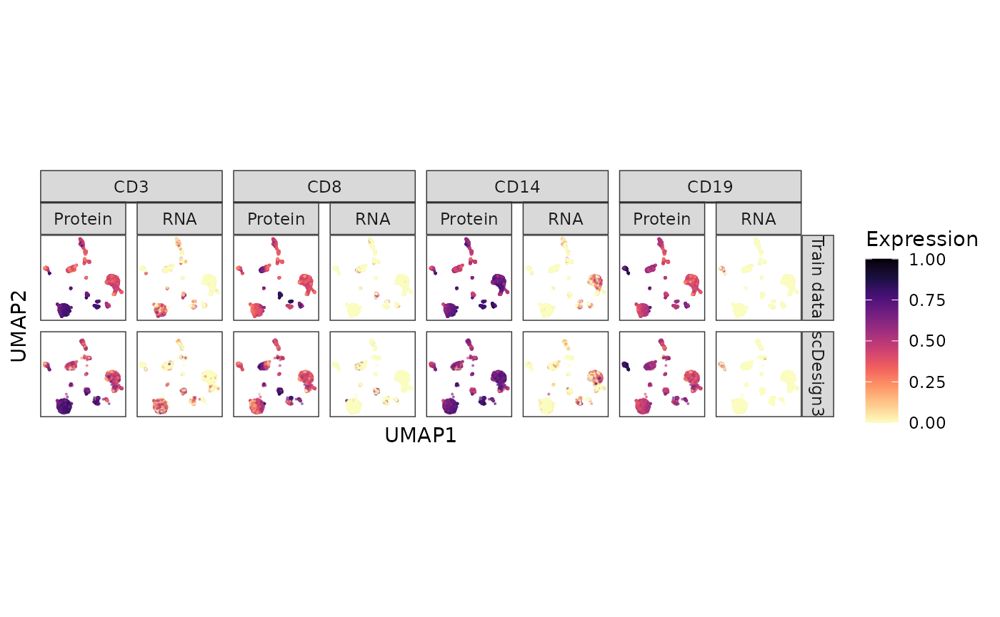

Simulate CITE-seq data
Dongyuan Song
Bioinformatics IDP, University of California, Los Angelesdongyuansong@ucla.edu
Qingyang Wang
Department of Statistics, University of California, Los Angelesqw802@g.ucla.edu
15 July 2023
Source:../../scDesign3/code/vignettes/scDesign3-CITEseq-vignette.Rmd
scDesign3-CITEseq-vignette.Rmd
library(scDesign3)
library(SingleCellExperiment)
library(dplyr)
library(ggplot2)
library(stringr)
library(tidyr)
library(scales)
library(ggh4x)
theme_set(theme_bw())Introduction
In this tutorial, we will show how to use scDesign3 to simulate CITE-seq data and illustrate the similarity between the inputted reference data and synthetic data.
Read in the reference data
To save computational time, we only use the top 100 genes and six more genes with protein and RNA abundance information.
keep_gene <- c("CD4", "CD14", "CD19", "CD34", "CD3E", "CD8A")
keep_adt <- c("ADT_CD4", "ADT_CD14", "ADT_CD19", "ADT_CD34", "ADT_CD3", "ADT_CD8")
keep <- c(keep_gene, keep_adt)
idx <- which(rownames(example_sce) %in% keep)
idx <- c(1:100,idx)
example_sce <- example_sce[idx,]
logcounts(example_sce) <- log1p(counts(example_sce))Simulation
We input the reference data and use the one-shot scdesign3() function to simulate CITE-seq dat using discrete cell types as the covariates for fitting each gene’s marginal distribution.
set.seed(123)
example_simu <- scdesign3(
sce = example_sce,
assay_use = "counts",
celltype = "cell_type",
pseudotime = NULL,
spatial = NULL,
other_covariates = NULL,
mu_formula = "cell_type",
sigma_formula = "cell_type",
family_use = "nb",
n_cores = 2,
usebam = FALSE,
corr_formula = "cell_type",
copula = "vine",
DT = TRUE,
pseudo_obs = FALSE,
return_model = FALSE,
nonzerovar = TRUE,
nonnegative = TRUE
)After the simulation, we can create the SinglecellExperiment object using the synthetic count matrix and store the logcounts to the input and synthetic SinglecellExperiment objects.
logcounts(example_sce) <- log1p(counts(example_sce))
simu_sce <- SingleCellExperiment(list(counts = example_simu$new_count), colData = example_simu$new_covariate)
logcounts(simu_sce) <- log1p(counts(simu_sce))Then, we obtained the PCA and UMAP for both the inputted reference data and the synthetic data. These sets of embedding will be used for the visualization below.
set.seed(123)
train_pca_fit <- irlba::prcomp_irlba(t(log1p(counts(example_sce))),
center = TRUE,
scale. = FALSE,
n = 50)
reducedDim(simu_sce, "PCA") <- predict(train_pca_fit, newdata= t(log1p(counts(simu_sce))))
simu_pac_fit <- predict(train_pca_fit, newdata= t(logcounts(simu_sce)))
train_umap_fit <- umap::umap(train_pca_fit$x, n_neighbors = 15, min_dist = 0.1)
simu_umap_fit <- predict(object = train_umap_fit, data= (reducedDim(simu_sce, "PCA")))
colnames(simu_umap_fit ) <- c("UMAP1", "UMAP2")
reducedDim(simu_sce, "UMAP") <- simu_umap_fit
train_umap <- train_umap_fit$layout
rownames(train_umap) <- colnames(example_sce)
colnames(train_umap) <- c("UMAP1", "UMAP2")Visualization
To visualize the results, we select six genes and reformat their UMAP embedding we got in the previous step.
expression_train <- as.matrix(logcounts(example_sce))[c(keep_gene ,keep_adt), ] %>% t() %>% as_tibble() %>% bind_cols(train_umap) %>% dplyr::mutate(Method = "Train data")
expression_scDesign3 <- as.matrix(logcounts(simu_sce))[c(keep_gene ,keep_adt), ] %>% t() %>% as_tibble() %>% bind_cols(simu_umap_fit) %>% dplyr::mutate(Method = "scDesign3")
CITE_dat <- bind_rows(expression_train, expression_scDesign3) %>% as_tibble() %>%
dplyr::mutate_at(vars(-c(UMAP1, UMAP2, Method)), funs(scales::rescale)) %>% tidyr::pivot_longer(-c("UMAP1", "UMAP2", "Method"), names_to = "Feature", values_to = "Expression") %>% dplyr::mutate(Type = if_else(str_detect(Feature, "ADT"), "Protein", "RNA")) %>% dplyr::mutate(Gene = str_replace(Feature, "ADT_", "")) %>% dplyr::mutate(Gene = if_else(Gene == "CD3E", "CD3", Gene))%>% dplyr::mutate(Gene = if_else(Gene == "CD8A", "CD8", Gene))%>% dplyr::filter(Gene %in% c("CD14", "CD3", "CD8", "CD19")) %>% dplyr::mutate(Gene = factor(Gene, levels = c("CD3", "CD8", "CD14", "CD19"))) %>% dplyr::mutate(Method = factor(Method, levels = c("Train data", "scDesign3")))
#> Warning: `funs()` was deprecated in dplyr 0.8.0.
#> ℹ Please use a list of either functions or lambdas:
#>
#> # Simple named list: list(mean = mean, median = median)
#>
#> # Auto named with `tibble::lst()`: tibble::lst(mean, median)
#>
#> # Using lambdas list(~ mean(., trim = .2), ~ median(., na.rm = TRUE))
#> Call `lifecycle::last_lifecycle_warnings()` to see where this warning was
#> generated.
head(CITE_dat)
#> # A tibble: 6 × 7
#> UMAP1 UMAP2 Method Feature Expression Type Gene
#> <dbl> <dbl> <fct> <chr> <dbl> <chr> <fct>
#> 1 -0.883 14.5 Train data CD14 0 RNA CD14
#> 2 -0.883 14.5 Train data CD19 0 RNA CD19
#> 3 -0.883 14.5 Train data CD3E 0 RNA CD3
#> 4 -0.883 14.5 Train data CD8A 0 RNA CD8
#> 5 -0.883 14.5 Train data ADT_CD14 0.623 Protein CD14
#> 6 -0.883 14.5 Train data ADT_CD19 0.527 Protein CD19Six genes’ protein and RNA abundances are shown on the cell UMAP embeddings in the inputted reference data and the synthetic data below.
CITE_dat %>% ggplot(aes(x = UMAP1, y = UMAP2, color = Expression)) + geom_point(size = 0.1, alpha = 0.5) + scale_colour_gradientn(colors = viridis_pal(option = "A", direction = -1)(10), limits=c(0, 1)) + coord_fixed(ratio = 1) + facet_nested(Method ~ Gene + Type ) + theme(aspect.ratio = 1, legend.position = "bottom") + theme(aspect.ratio = 1, legend.position = "right") + theme(
panel.grid.minor = element_blank(),
panel.grid.major = element_blank(),
axis.text.x=element_blank(),
axis.ticks.x=element_blank(),
axis.text.y=element_blank(),
axis.ticks.y=element_blank())
Session information
sessionInfo()
#> R version 4.3.0 (2023-04-21)
#> Platform: x86_64-pc-linux-gnu (64-bit)
#> Running under: Ubuntu 20.04.6 LTS
#>
#> Matrix products: default
#> BLAS: /usr/lib/x86_64-linux-gnu/openblas-pthread/libblas.so.3
#> LAPACK: /usr/lib/x86_64-linux-gnu/openblas-pthread/liblapack.so.3; LAPACK version 3.9.0
#>
#> locale:
#> [1] LC_CTYPE=en_US.UTF-8 LC_NUMERIC=C
#> [3] LC_TIME=en_US.UTF-8 LC_COLLATE=en_US.UTF-8
#> [5] LC_MONETARY=en_US.UTF-8 LC_MESSAGES=en_US.UTF-8
#> [7] LC_PAPER=en_US.UTF-8 LC_NAME=C
#> [9] LC_ADDRESS=C LC_TELEPHONE=C
#> [11] LC_MEASUREMENT=en_US.UTF-8 LC_IDENTIFICATION=C
#>
#> time zone: America/Los_Angeles
#> tzcode source: system (glibc)
#>
#> attached base packages:
#> [1] stats4 stats graphics grDevices utils datasets methods
#> [8] base
#>
#> other attached packages:
#> [1] ggh4x_0.2.4 scales_1.2.1
#> [3] tidyr_1.3.0 stringr_1.5.0
#> [5] ggplot2_3.4.2 dplyr_1.1.2
#> [7] SingleCellExperiment_1.22.0 SummarizedExperiment_1.30.2
#> [9] Biobase_2.60.0 GenomicRanges_1.52.0
#> [11] GenomeInfoDb_1.36.1 IRanges_2.34.1
#> [13] S4Vectors_0.38.1 BiocGenerics_0.46.0
#> [15] MatrixGenerics_1.12.2 matrixStats_1.0.0
#> [17] scDesign3_0.99.5 BiocStyle_2.28.0
#>
#> loaded via a namespace (and not attached):
#> [1] tidyselect_1.2.0 viridisLite_0.4.2 farver_2.1.1
#> [4] bitops_1.0-7 fastmap_1.1.1 RCurl_1.98-1.12
#> [7] kde1d_1.0.5 digest_0.6.33 lifecycle_1.0.3
#> [10] survival_3.5-5 gamlss.dist_6.0-5 magrittr_2.0.3
#> [13] compiler_4.3.0 rlang_1.1.1 sass_0.4.6
#> [16] tools_4.3.0 utf8_1.2.3 yaml_2.3.7
#> [19] knitr_1.43 labeling_0.4.2 askpass_1.1
#> [22] S4Arrays_1.0.4 mclust_6.0.0 reticulate_1.30
#> [25] DelayedArray_0.26.6 withr_2.5.0 purrr_1.0.1
#> [28] rvinecopulib_0.6.3.1.1 desc_1.4.2 grid_4.3.0
#> [31] fansi_1.0.4 colorspace_2.1-0 MASS_7.3-60
#> [34] cli_3.6.1 rmarkdown_2.23 crayon_1.5.2
#> [37] ragg_1.2.5 generics_0.1.3 umap_0.2.10.0
#> [40] RSpectra_0.16-1 cachem_1.0.8 zlibbioc_1.46.0
#> [43] splines_4.3.0 assertthat_0.2.1 parallel_4.3.0
#> [46] BiocManager_1.30.21 XVector_0.40.0 vctrs_0.6.3
#> [49] Matrix_1.6-0 jsonlite_1.8.7 bookdown_0.34
#> [52] gamlss_5.4-12 irlba_2.3.5.1 systemfonts_1.0.4
#> [55] jquerylib_0.1.4 glue_1.6.2 pkgdown_2.0.7
#> [58] rngWELL_0.10-9 stringi_1.7.12 gtable_0.3.3
#> [61] randtoolbox_2.0.4 munsell_0.5.0 tibble_3.2.1
#> [64] pillar_1.9.0 htmltools_0.5.5 openssl_2.0.6
#> [67] gamlss.data_6.0-2 GenomeInfoDbData_1.2.10 R6_2.5.1
#> [70] textshaping_0.3.6 rprojroot_2.0.3 evaluate_0.21
#> [73] lattice_0.21-8 highr_0.10 png_0.1-8
#> [76] memoise_2.0.1 bslib_0.5.0 Rcpp_1.0.11
#> [79] nlme_3.1-162 mgcv_1.8-42 xfun_0.39
#> [82] fs_1.6.2 pkgconfig_2.0.3